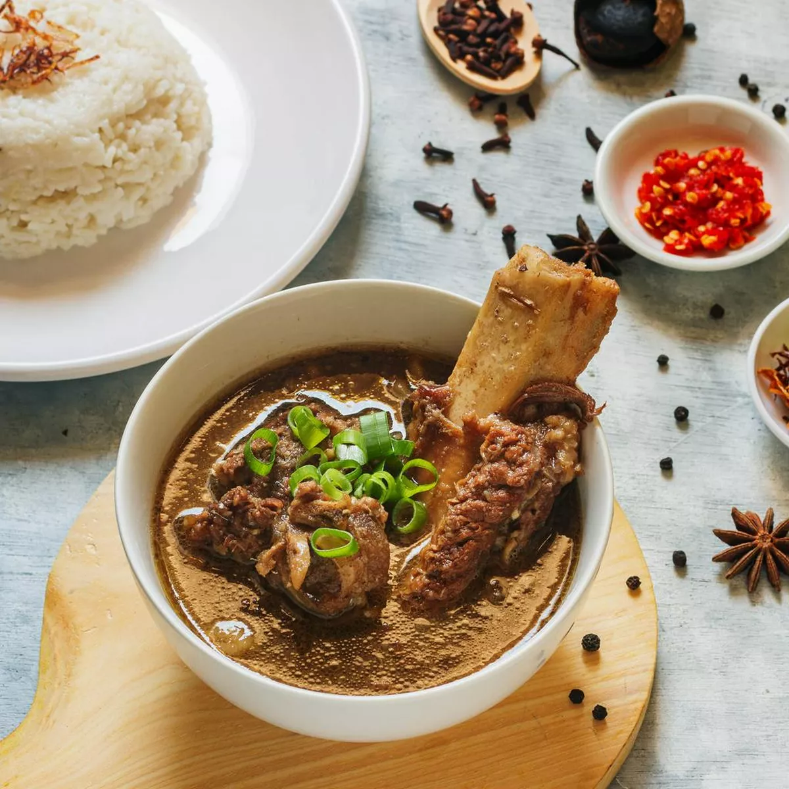
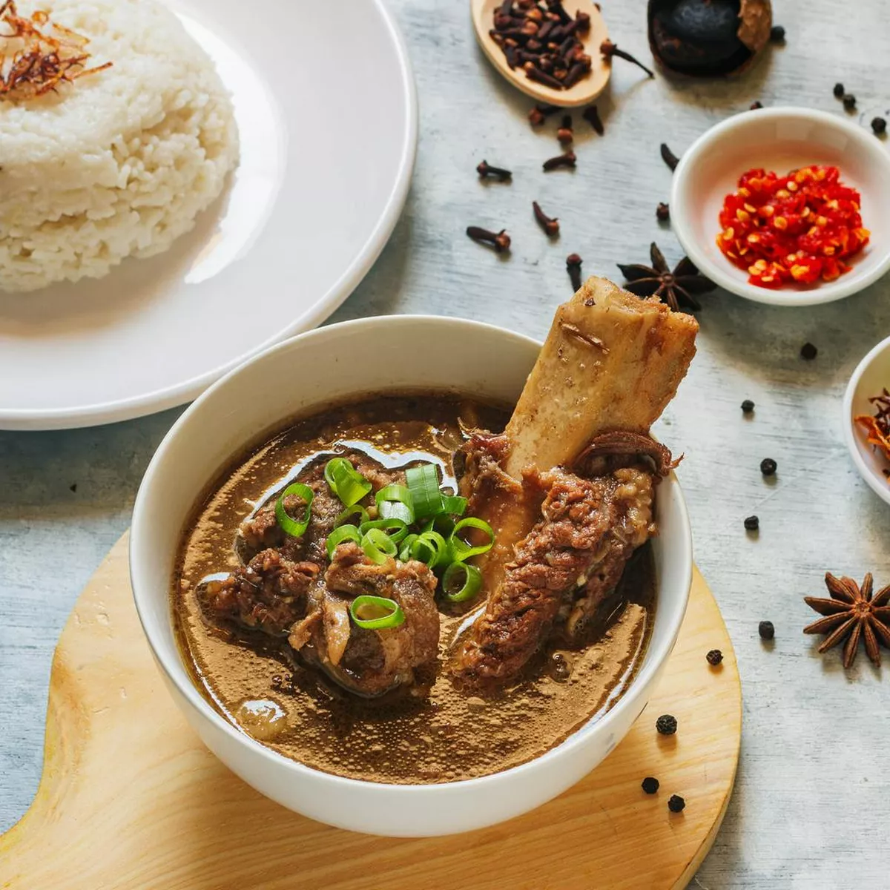
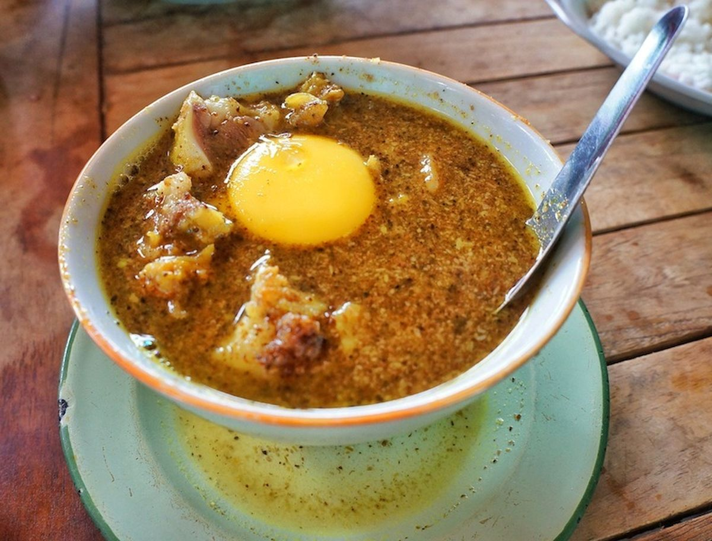

Sop Konro
Sop Konro is a hearty rib soup from the Bugis and Makassarese of South Sulawesi. It is cooked with a rich broth of spices and served with rice or burasa.
Coto Makassar, often simply referred to as "Coto," is a traditional soup from Makassar, South Sulawesi. This rich and savory dish is made from a blend of beef and various offals like heart, lungs, and intestines, simmered in a spice-infused broth. Key ingredients include garlic, shallots, ginger, galangal, and lemongrass, which give it a distinctive flavor. Coto is typically enjoyed with steamed rice or burasa, a type of compressed rice cake, and often accompanied by a spicy sambal tauco.

Sop Konro is a hearty rib soup from the Bugis and Makassarese of South Sulawesi. It is cooked with a rich broth of spices and served with rice or burasa.
Pallubasa is another traditional soup similar to Coto but uses a different blend of spices and often includes coconut milk, served with a sprinkle of fried shallots and shredded coconut.
